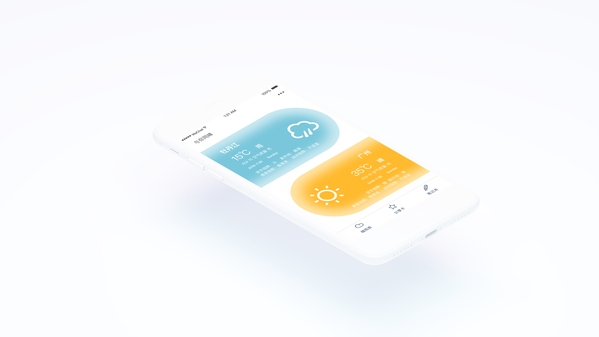
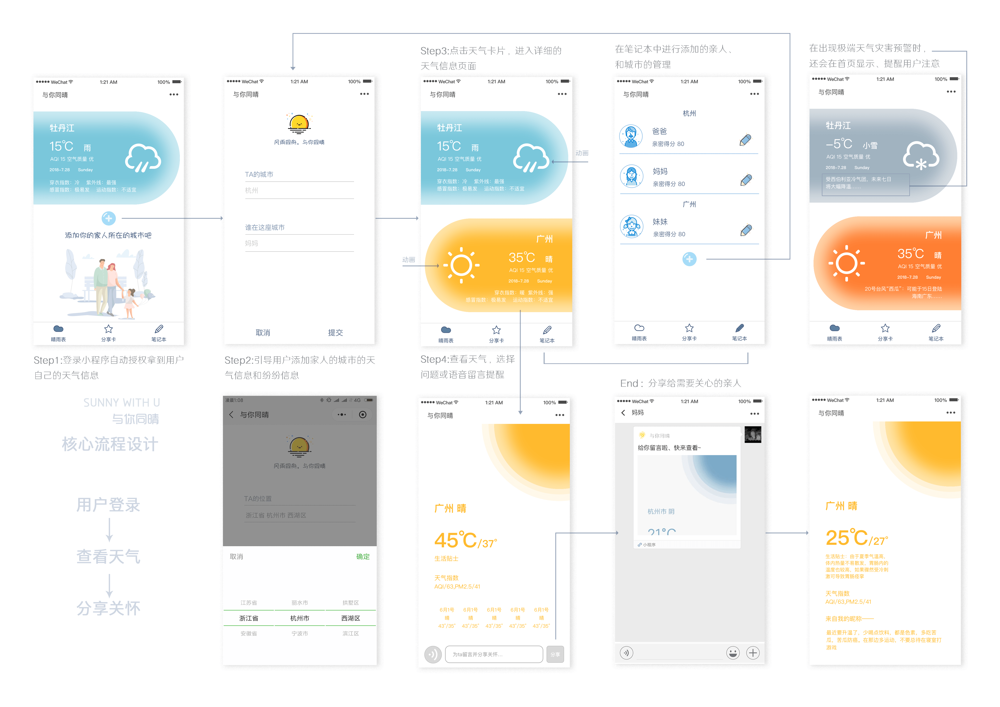
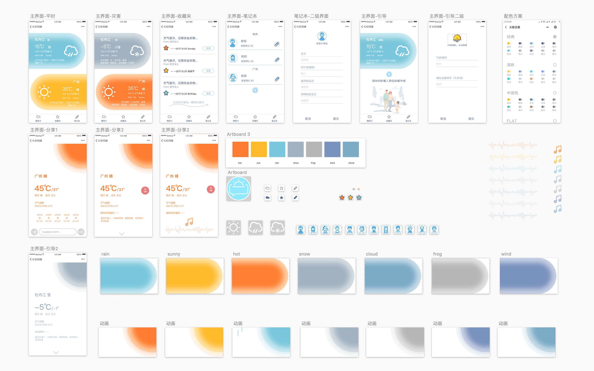

Product Manager
User Research
Xiahao
Zhanghaitong
AI,Axure
About the Project
与你同晴是一款致力于加强用户与身处两地的亲人情感联系的生活类小程序。你可以添加亲人所在城市的天气信息到首页，随时可以分享对方的天气信息给家人，还可以生成自己的天气心情分享到朋友圈。当用户的亲人所在城市的未来会出现极端天气波动（如高温、寒潮…），小程序会及通过服务通知、或者不同颜色的背景提醒用户为自己的家人提个醒，增进彼此之间的情感联系。

The Inspiration
发现问题
“嘘寒问暖”是生活中我们最常见的话题，谈天气同时是很多聊天的起点。很多时候我们不知道自己的城市要降温了，但是自己的妈妈已经打电话提醒你要加衣服了。我的灵感来自假期回家的观察，很多家在外地的孩子的父母看电视都会看孩子的城市的天气预报。不论爱人、亲人，不论距离多远，同一片天空下我们晴雨同在
- 解决身处异地的亲人（爱人）的情感诉求
- 鼓励孩子和家人更多的交流，表达关怀
- 有趣、生动。具有一定的社交传播价值
The Challenge
我们的遇到的最大的挑战是——时间。因为大家都很忙也很拖延，我们在截止前三天开始了一次开发者马拉松。从熟悉api到熟悉设计规范。如何高效的利用时间，缩短设计流程，快速原型设计和验证是身为设计师的挑战，我们直接通过本地服务器和Onedrive文件共享，维护项目
该小程序客户端采用微信小程序基础框架进行开发，服务器采用Bmob框架进行开发。
本程序调用了：（1） 和风天气API （2） Bmob API （3）腾讯云COS API其中，和风天气提供了小程序中使用的天气信息的接口，Bmob API提供了部分服务端接口及功能，腾讯云COS提供了数据存储服务功能。

Research
Empathize & Define
设计调研部分我们使用移情模型对期望客户进行详实的分析，深入挖掘我们在与异地的亲人微信聊天的场景下所想、所关心的，以及做事的动机是什么。

Scenarios
场景画像
根据访谈和研讨，我们设置了三个角色。我们在整个产品开发过程中都考虑到了它们的需求。
- 子琪在微信上和闺蜜约饭，为了确定行程打开了与你同晴，今天是阴天但不会下雨，她放心了。这时她注意到北方的老家不知不觉已经降温飘雪了，想到一个人住的妈妈，她用与你同晴的分享了老家的天气给妈妈，并留言注意保暖
- 郑浩在微信上和人聊天，这时收到了一条来自小程序的服务通知，提醒他“20号强台风这周将会登录广州，快去关心一下父母吧”
- 李薇在上海工作，在玩手机时看到妈妈分享了一个小程序给她，点开一看是最近上海的天气将迎来高温预警，下面还有妈妈的语音，让她多吃苦瓜败火，少喝碳酸饮料，她立刻回了一句“谢谢母后大人，近来可安好？”
Prototype
Initial Wireframe
Axure Skteches
根据对用户预期行为的分析，对所需要的功能进行归类和整理，我使用Axure设计了最初的交互流程图，确定了基本的布局和功能，方便前端的开发。
- 在后期取消了收藏功能，改为了更有分享价值的心情天气
- 后期取消了个性测试，因为这个功能是一个一次性的功能
- 在原型的上做了第一版界面设计
UI Design
Design System
Sketch library
在第一版的基础上结合其他成员的意见，对界面进行了比较大的调整
- 配色方案明亮，体现天气变化的主题
- 将天气卡片的布局更像对话框，给人分享的暗示
- 分享天气心情到朋友圈，加快小程序的传播

Perational